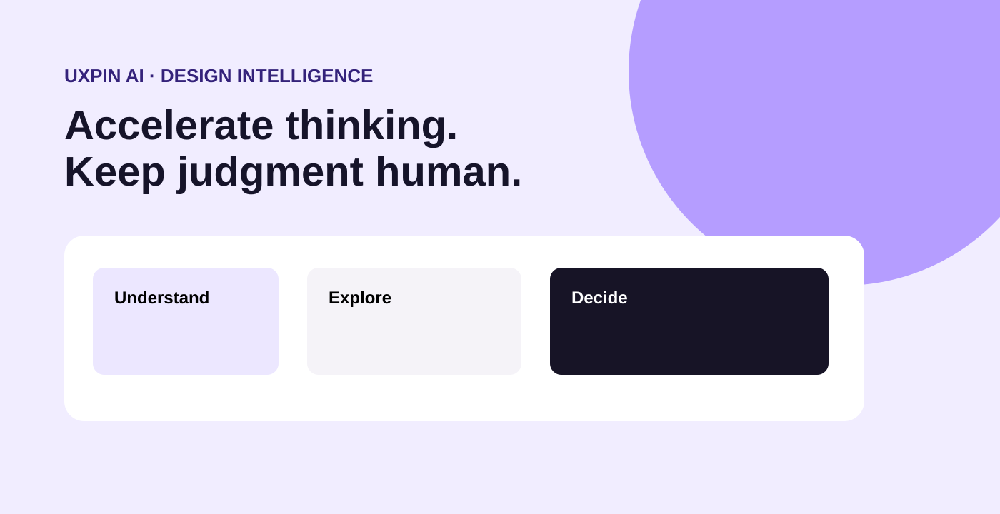

AI can make design faster. It can also make weak decisions faster.
The opportunity behind UXPin AI is to remove repetitive work from the design process while protecting the judgment that makes design valuable. A useful AI feature should understand the designer's context, produce a meaningful starting point and make it easy to inspect, redirect or reject the output.
My role: define where intelligence belongs
I framed the experience around the moments where a designer benefits from acceleration: exploring alternatives, identifying patterns, critiquing an interface and moving from an observation toward a concrete design action. That keeps AI connected to the workflow rather than turning it into a separate chatbot experience.
Strategy: assistance should be inspectable
The interaction model makes the designer's intent, system state and resulting recommendation visible. Progressive disclosure keeps the default experience focused while allowing deeper reasoning when it is useful. The designer remains the final decision-maker throughout the flow.
Capture the user's goal and the relevant design context before generating assistance.
Use AI to broaden possibilities, surface patterns and reduce repetitive exploration.
Review the suggestion, apply judgment and keep the final product decision with the designer.
Interaction principles
- Make the primary design task obvious.
- Keep AI assistance explainable and controllable.
- Separate suggestion from decision so automation never masquerades as authority.
- Provide recovery paths when the output is incomplete, irrelevant or wrong.
- Use reusable interaction patterns before adding visual complexity.
Leadership impact
This case shows how I approach emerging technology as a UX leader: start with the human workflow, define the decision boundaries, challenge the value of automation, and design an experience that earns trust through clarity and control.